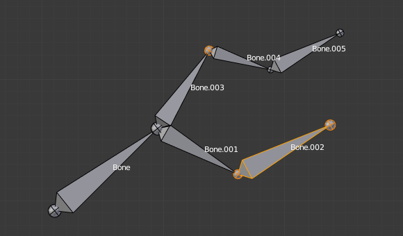

Selecting¶
You can select and edit bones of armatures in Edit Mode and in Pose Mode. Here, we will see how to select bones in Edit Mode. Selecting bones in Pose Mode is similar to selecting in Edit Mode with a few specific differences that will be detailed in the posing part.
Similar to vertex/edge selection in meshes, there are two ways to select whole bones in Edit Mode:
- Directly, by selecting the bone’s body.
- Selecting both of its joints (root and tip).
This is an important point to understand, because selecting bones’ joints only might lead to non-obvious behavior, with respect to which bone you actually select.
Note that unlike the mesh display type, the armature display type has no effect on selection behavior. In other words, you can select a bone’s joint or body the same way regardless of the bone visualization chosen.
Selecting Bone Joints¶
To select bones’ joints you have the standard selection methods.
Inverse Selection¶
As stated above, you have to remember that these selection tools are for bones’ joints only, not the bones’ bodies.
For example, the Inverse selection option Ctrl-I inverts the selection of bones’ joints, not of bones (see Inverse selection).
Remember that a bone is selected only if both its joints are selected. So, when the selection status of bones’ joints is inverted, a new set of bones is selected.

Two bones selected. |

The result of the inverse selection Ctrl-I: The bones joints selection has been inverted, and not the bones selection. |
{kind=link}
Selecting Connected Bone Joints¶
Another example is: when you select the root of a bone connected to its parent, you also implicitly select the tip of its parent (and vice versa).
Note
Remember that when selecting bones’ joints, the tip of the parent bone is the “same thing” as the root of its children bones.
Selecting Bones¶
By clicking on a bone’s body, you will select it (and hence you will implicitly select its root and tip).
Using Shift-click, you can add to/remove from the selection.
You also have some advanced selection options, based on their relations.
You can select at once all the bones in the chain which the active (last selected) bone belongs to by using the linked selection tool, L.

A single selected bone. |

Its whole chain selected with L. |
- Mirror Shift-Ctrl-M
- Flip the selection from one side to another.
- Pick Shortest Path Ctrl-click
- Selects the path from the active bone to the bone under the mouse.
Deselecting Connected Bones¶
There is a subtlety regarding connected bones.
When you have several connected bones selected, if you deselect one bone, its tip will be deselected, but not its root, if it is also the tip of another selected bone.
To understand this, look at Fig. Bone deselection in a selected chain..
|
A selected chain. |
Two selected bones. |
After Shift-clicking “Bone.003”:
- “Bone.003” ‘s tip (which is same as “Bone.004” ‘s root) is deselected.
- “Bone” is “Bone.003” ‘s parent. Therefore “Bone.003” ‘s root is same as the tip of “Bone”. Since “Bone” is still selected, its tip is selected. Thus the root of “Bone.003” remains selected.
More/Less¶
Reference
| Mode: | Edit Mode |
|---|---|
| Menu: |
- More Ctrl-NumpadPlus
- Expand the current selection to the connected bones.
- Less Ctrl-NumpadMinus
- Contrast the selection, deselect bones at the boundaries of each selection region.
- Parent [, Child ]
- You can deselect the active bone and select its immediate parent or one of its children.
- Extend Parent Shift-[, Extend Child Shift-]
- Similar to Parent/Child but it keeps the active bone in the selection.
Similar¶
Reference
| Mode: | Edit Mode |
|---|---|
| Menu: | |
| Hotkey: | Shift-G |
- Children
- Extends the selection to all hierarchical descendant bones.
- Immediate Children
- Extends the selection to all direct child bones.
- Siblings
- Selects bones that have the same parent as the active bone.
- Length
- Selects bones with a similar bone length (between tip and tail) under the specified Threshold.
- Direction (Y axis)
- Select bones aligned on the Y axis (along the bone’s length).
- Prefix
- Select bones with matching name prefix (separated by
.). - Suffix
- Select bones with matching name suffix (separated by
.). - Layer
- Select bones on the same layer.
- Group
- Select bones in the same group.
- Shape
- Select bones using the same shape object (in pose mode).